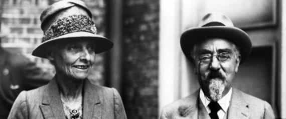

Before I begin, I want to say that what I am about to write is in no way intended to be malicious. I was born and raised in the UK and many of the men I most admire are British or of Anglo descent, with the UK producing some of finest minds in all of Western Civilisation, from Geoffrey Chaucer to Sir Roger Scruton.
However, British men of today are (for the most part) finished, in terms of being torch bearers for Western Civilisation. They are no longer at the forefront in any of the crucial battlegrounds, be it creative, philosophical or technological, and I want to attempt to explain exactly why that is.
British Men Are Ruled by Their Women
The bossy wife and hen-pecked husband have been a mainstay in British entertainment for many decades.
The majority of British men clamour for female attention and only feel validated once they have secured the attention of a woman. Today, this has reached the point where, if I walk down any street in any town or city, I will see many a slim and in shape man holding hands with an ungrateful land whale in a tight fitting top and “jeggings”.
Growing up in a family that had a mix of Eastern and British roots, I was able to witness the differences between how husbands and wives behaved with each other. The Eastern side had very defined male and female roles, husbands and wives were not in each other’s pockets but had an equal balance of a life together and a life apart, which made for healthier marriages. For example, all of my male relatives would spend time with their friends, there was no need for clock watching or fearing they would get a thrashing because they were neglecting the little woman at home.
In stark contrast, my British relatives and their friends, ranging from working to lower middle class, always had, what appeared from my perspective, odd marriages. The husbands would be described as the head of the house, but in name only. They would generally be down-trodden, subjected to decades of tirades and tantrums from their wives, they would neglect friendships, sometimes allowing lifelong friends to slip into oblivion, because they placed their wives on pedestals and treated them like Goddesses, attending to their every whim. The husbands would very rarely spend any time away from their wives for fear of retribution.
Despite being so obsequious, to the point of turning into clones of Uriah Heep, the wives would always complain to their friends about how lazy and stupid their husbands were, irrespective of these husbands, especially the Baby Boomers, working long hours and still concentrating on keeping the garden in shape and fixing up the house during weekends.
For those of you thinking the bossy wife and hen-pecked husband is a recent phenomenon, then you only have to take a look at British culture to see this has been a present theme for over 100 years. From films such as ‘Sailor, Beware!’ (1956), the long-running and still highly popular soap opera ‘Coronation Street’ (1960 – onwards) which, from its inception, portrayed a plethora of domineering women, to comical seaside postcards from the late Victorian era.
I believe it has always been the case in Britain that women have had the upper-hand in marriage, but due to the social dynamics shifting dramatically, coupled with the decline in Christian social conservatism after WWII, it’s become more pervasive.
Britain Is Feminist Ground Zero
British suffragettes proved to be the most violent of all, in trying to get what they wanted.
Britain is a bastion of feminism and has long been so. It bore Mary Wollstonecraft and its intelligentsia welcomed, with open arms, the likes of Antipodean harpy Germaine Greer. One can trace the very beginning of feminism as an ideology in Britain back to Wollstonecraft and her pamphlet – A Vindication of the Rights of Woman (1792).
Britain’s rigid class system has been the perfect breeding ground for insidious ideologies like feminism. Queen Victoria may have called women’s rights a “dangerous folly”, but the burgeoning suffragette movement, consisting of well-to-do ladies, unleashed the poison which Wollstonecraft had wanted to do some 100 years previously.
Let’s compare the behaviour of British suffragettes to their French counterparts. Women’s suffrage was encouraged by the Catholic clergy in France, as they knew that women were still influenced by their local priests and husbands. The approach of French suffragettes was also more refined. The British suffragettes, on the other hand, quickly descended into anarchy and outright hatred of men, with many sympathetic to social justice, wreaking havoc across London and other cities.
This strain of anarchy did not die when women secured the vote in the UK in 1918, but remained at the heart of every social justice movement women were involved in.
Britain Allowed Soft Socialism To Gain A Foothold

Sidney Webb, an early member of the nefarious Fabian Society and co-founder of the leftist cesspool known as the London School of Economics.
Britain’s handling of socialism with kid gloves can be traced back to Methodism, the weakest of all Christian denominations. Methodism was born and cultivated in the UK in the 18th century, by the Anglican theologian John Wesley and George Whitefield et al, and it would be the Methodists who would become the most active proponents of social justice.
Methodists were big players in the formation of Trade Unions in Britain, as well as other social and cultural enterprises during the Victorian era and, as ideas of socialism as we know it today began to circulate, the Methodists were quick to embrace certain elements of it.
Socialism truly began to entrench itself during the first decade of the 20th century, with the formation of the British Labour Party, an amalgamation of radical socialists, Trade Unionists and intellectuals of the Fabian Society. In a few decades, the party would become a dominant force in politics, especially after WWII.
If it wasn’t for the Methodists and their promotion of soft socialism in British culture, I feel Britons today would be less inclined towards social liberalism and the destructiveness that comes with it.
Conclusion

After over a century of assault, many British men, like most of their Western counterparts, feel lost and confused.
In 2017, all of these components have reached their zenith, becoming a Goliath that is hindering British men from reaching their true potential. Of course, there are myriad other components, historical, psychological, cultural, and it’s a very complex issue, but these three are the most injurious, laying the foundation for the many ills Britain faces today.
If one looks at the bigger picture, men across the Anglosphere are hindered in becoming men of merit due to these same problems, some less, others more. Yet, I am optimistic some British men will be able to break through this mess, as the country further self-destructs. British society has always had this ability to produce some of the most unique voices in Western culture, such as Enoch Powell, Jonathan Bowden et al, men who stood as prophets, able to see through the miasma.
Read More: British Police: Men Who Try To Get Laid Are Guilty Of Misogynistic “Hate Crimes”